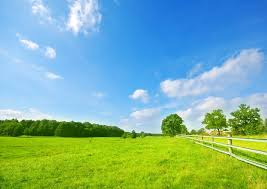

Agrinho do Campo a Cidade Colhendo Oportunidades
-
O Agrinho 2024, tem o foco de mostrar a coexistência do campo e da cidade, e como eles precisam conviver entre si.
Mostrando as diversas oportunidades que a vida nos da, sendo assim este ano pelo tema ser muito amplo podemos citar vários
acontecimentos importantes.

-
O tema que escolhi foi sustentábilidade rural, conectando comunidades rurais e urbanas, foi o que
melhor me identifiquei de forma a achar a melhor opção dentre as que pensei, pretendo demonstrar alguns apectos
de colaboração.
Aqui darei algumas sujestões para que o campo e cidade existam em harmonia, assim também melhorando
a qualidade de vida da população. Para mais informações vá para a proxima página.